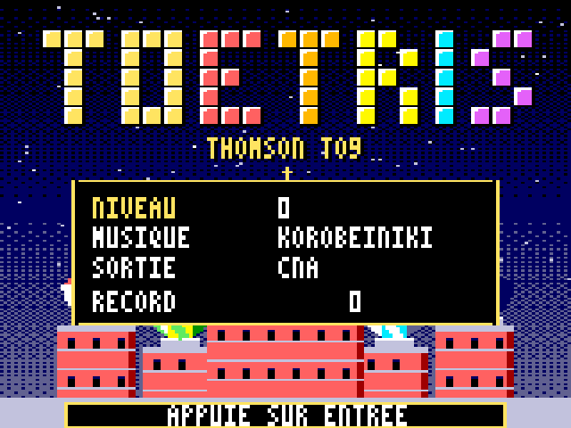
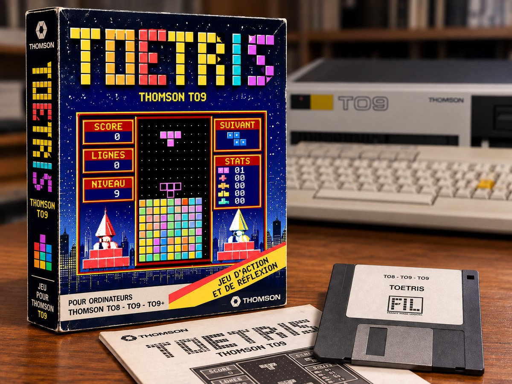
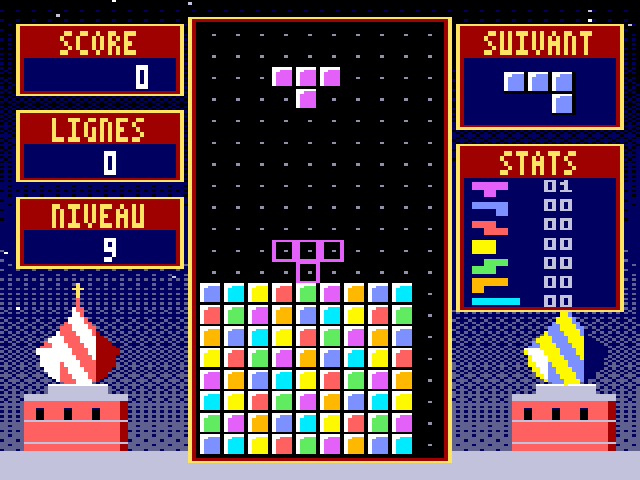
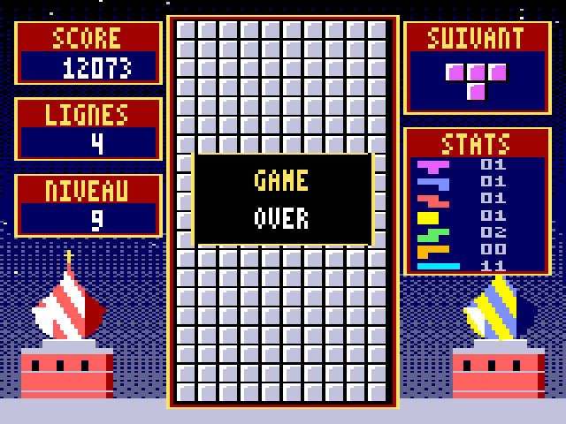

Le jeu de blocs de la Game Boy, réécrit en assembleur pour votre Thomson. Il est gratuit et se joue dans l'émulateur DCMOTO, en trois étapes.

Pas à pas
Pas besoin d'un vrai TO9 : l'émulateur DCMOTO transforme votre PC en Thomson. Comptez cinq minutes la première fois.
-
Installez l'émulateur DCMOTO
DCMOTO est gratuit. Téléchargez-le, décompressez le fichier zip, puis lancez dcmoto.exe. Les mémoires mortes des Thomson sont incluses : rien d'autre à chercher.
Il fonctionne sous Windows. Sur Mac ou Linux, il se lance avec Wine.
-
Choisissez le TO9 et insérez la disquette
Dans DCMOTO, choisissez la machine TO9 (TO8 et TO9+ conviennent aussi). Puis placez dans le lecteur le fichier TOETRIS.fd que vous avez téléchargé.
Dans les menus de DCMOTO
-
Démarrez et tapez la commande
Redémarrez l'ordinateur émulé (touche Échap). Au menu du TO9, choisissez 3 - BASIC 128. Sur TO8 et TO9+, prenez le BASIC 512. Tapez ensuite la commande, puis Entrée.
À taper sur le Thomson
RUN"TOETRIS"
En cas de souci
- La disquette ne se lit pas sur TO9
- Le BASIC 1.0 du TO9 ne sait pas lire les disquettes : revenez au menu et choisissez 3 - BASIC 128.
- Les couleurs semblent fausses
- Appuyez sur C pendant le jeu pour inverser la correspondance des couleurs.
- Vous voulez jouer sans le son
- Tapez
RUN"TOETRIS0"à la place : c'est la même version, muette. - Le jeu va trop vite ou trop lentement
- Au menu du jeu, réglez le niveau de départ, de 0 (le plus lent) à 9.
Les commandes
Pendant la partie
| Touche | Action |
|---|---|
| ←→ ou QD | Déplacer la pièce. Une touche maintenue répète le mouvement. |
| ↓ ou S | Descente rapide (1 point par ligne descendue) |
| ↑ ou Espace ou A | Tourner dans le sens des aiguilles d'une montre |
| Z ou W ou X | Tourner dans l'autre sens |
| Entrée | Pause |
| M | Couper ou remettre la musique |
| G | Afficher ou masquer la pièce fantôme |
| C | Inverser les couleurs si elles sont fausses |
| Manette 1 | Directions et bouton, détectée toute seule |
Au menu du jeu
↑↓ choisit la ligne, ←→ change la valeur, Entrée lance la partie.
| Ligne | Valeurs |
|---|---|
| Niveau | 0 à 9 |
| Musique | Korobeiniki, Menuet, Ode à la joie, ou aucune |
| Sortie | CNA (extension jeux) ou buzzer interne |
| Record | Meilleur score de la séance |
Le jeu
TOetris reprend fidèlement les règles du jeu de blocs de la Game Boy (1989) : les mêmes vitesses, les mêmes rotations, le même calcul des points. Seul l'habillage change. Les fonds, les cases et la police ont été dessinés pour le TO9, en 16 couleurs, et la musique sort du convertisseur de l'extension jeux ou, à défaut, du petit buzzer de la machine.
Le puits fait 10 cases sur 20. Une ligne complète disparaît ; quatre lignes d'un coup rapportent gros. Toutes les dix lignes, on passe au niveau suivant et les pièces tombent plus vite, jusqu'au niveau 20.
Le barème
- 1 ligne : 40 points × (niveau + 1)
- 2 lignes : 100 points × (niveau + 1)
- 3 lignes : 300 points × (niveau + 1)
- 4 lignes : 1 200 points × (niveau + 1)
- plus 1 point par ligne de descente rapide
Trois musiques à écouter
Des arrangements originaux d'airs du domaine public, enregistrés à la sortie du simulateur. Le TO9 les joue sur deux voix, mélodie et basse.



Les coulisses
Comme en 1985, tout est écrit en assembleur 6809, directement pour le processeur du TO9 : pas de BASIC, pas de raccourci. Le programme tient en moins de 15 Ko, musiques comprises.
L'adaptation a été entièrement « vibecodée » avec Claude, l'assistant d'Anthropic : le code 6809, les graphismes, les musiques, et même un petit simulateur de TO9 qui a servi à tout tester avant les essais dans DCMOTO.
Le code source complet est libre (licence MIT). Les curieux y trouveront aussi les pièges rencontrés en chemin, utiles à quiconque programme encore le TO9.
Code source sur GitHub- AffichageMode 160 × 200 en 16 couleurs, choisies parmi 4 096. Les fonds sont compressés : 32 Ko deviennent 7,6 Ko.
- SonDeux voix carrées et des bruitages, calculés sous interruption du timer. Le jeu mesure la machine au démarrage et choisit la bonne cadence.
- MusiquesÉcrites en motifs réutilisables : près d'une minute par morceau en quelques centaines d'octets.
TOetris est un projet amateur, sans lien avec The Tetris Company, Nintendo, Thomson ou France Image Logiciel. Tetris est une marque de The Tetris Company. Le jeu ne contient aucune donnée issue d'un jeu du commerce : graphismes, musiques et code ont été écrits pour ce projet.
A free falling-blocks game for the Thomson TO8, TO9 and TO9+, written in 6809 assembly.
DCMOTO est l'œuvre de Daniel Coulom, sur dcmoto.free.fr.

Dans ce numéro aussi : TOboum
Toto et sa casquette à hélice ramassent les bombes à travers cinq décors, de l'Égypte au Mont-Saint-Michel. Un jeu de plates-formes inspiré de Bomb Jack, pour les mêmes machines.